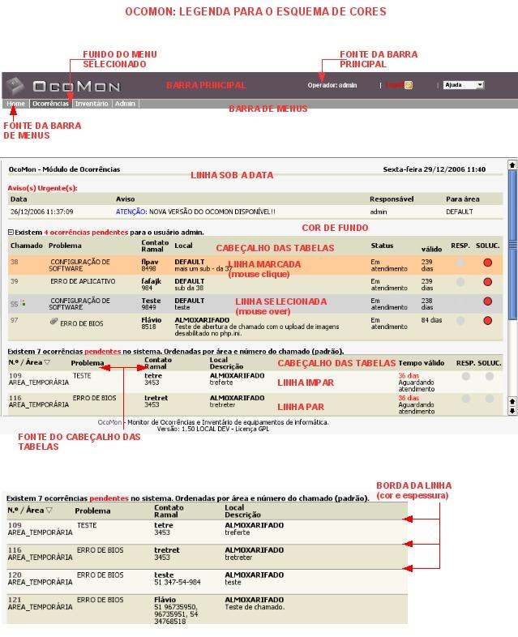

Configuração da Aparência do OcoMon (Admin -> Configurações -> Aparência)
Essa opção permite escolher um esquema de cores pré-definido no sistema ou criar novos esquemas. Um esquema de cor é o conjunto de cores que definem a aparência do sistema.
A imagem a seguir demonstra cada uma das opções que pode ser customizada no sistema:

Cores que podem ser customizadas no OcoMon.
Dica: através dessa tela somente é possível utilizar cores e não imagens. O esquema Default utiliza algumas imagens para definir a barra principal, barra de menus e cabeçalho das tabelas. Caso queira alterar/substituir essas imagens, as mesmas estão em:
- Imagem da barra principal: ocomon/includes/css/main_bar.png
- Imagem da barra de menus: ocomon/includes/css/aqua.png
- Imagem do cabeçalho das tabelas: ocomon/includes/css/header_bar3.png